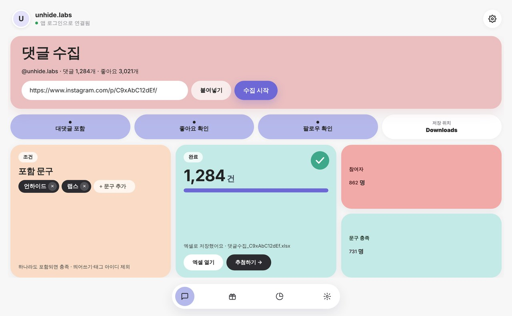
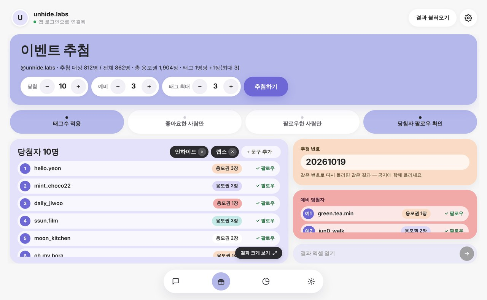
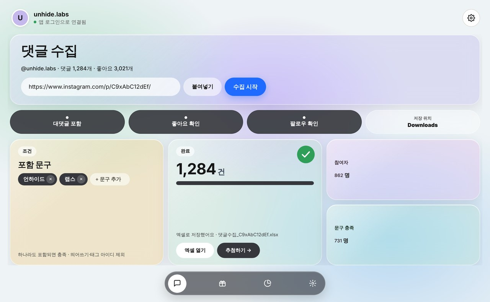

인스타 댓글 수집기
Comment Collector
게시물 주소만 넣으면 댓글·태그·좋아요·팔로우까지 엑셀로 정리하고, 조건을 충족한 참여자 중에서 공정하게 추첨해요.
두 버전 모두 설치 후 등록 코드가 필요해요

작성자, 내용, 시간, 태그한 친구 수, 대댓글까지 엑셀 한 파일로.
지정한 문구 포함 여부, 좋아요·팔로우 여부를 자동으로 확인해요.
태그 수만큼 응모권 가중치, 당첨·예비 인원 설정, 추첨 번호로 결과 재현.
평소 쓰는 인스타그램 계정으로 앱 안에서 바로 로그인해요.
기본 · 리퀴드 글래스 · 팝. 취향대로 화면을 바꿀 수 있어요.
지난 수집·추첨 결과를 언제든 다시 불러와 확인해요.




등록 코드는 어디서 받나요?
이 프로그램은 등록 코드가 있어야 사용할 수 있어요. 프로그램을 전달한 담당자에게 받은 코드(INSTA-XXXX-XXXX-XXXX)를 처음 실행할 때 입력하세요. Windows와 Mac 모두 같은 방식이고, 코드 하나는 정해진 수의 컴퓨터에서만 쓸 수 있어요.
‘Windows의 PC 보호’ 창이 떠요.
개인 스튜디오가 만든 프로그램이라 처음 한 번 나오는 안내예요. ‘추가 정보’를 누른 뒤 ‘실행’을 누르면 설치가 진행돼요.
인스타그램 비밀번호가 어딘가로 전송되나요?
아니요. 로그인은 인스타그램 공식 로그인 화면에서 직접 이루어지고, 로그인 상태는 내 컴퓨터에만 저장돼요.
컴퓨터를 바꾸면 어떻게 하나요?
담당자에게 문의하면 등록된 컴퓨터를 옮겨 드려요.
Mac에서 ‘열 수 없습니다’ 창이 떠요.
Apple 개발자 인증을 받지 않은 개인 스튜디오 앱이라 처음 한 번 나오는 안내예요. ‘완료’를 누른 뒤 시스템 설정 → 개인정보 보호 및 보안에서 ‘그래도 열기’를 누르면 다음부터는 바로 열려요. ‘휴지통으로 이동’은 누르지 마세요.
내 Mac이 Apple 실리콘인지 인텔인지 어떻게 알아요?
화면 왼쪽 위 사과 메뉴 → ‘이 Mac에 관하여’에서 칩이 ‘Apple M1·M2·M3·M4…’로 나오면 Apple 실리콘, ‘Intel’로 나오면 인텔 맥용을 받으세요.